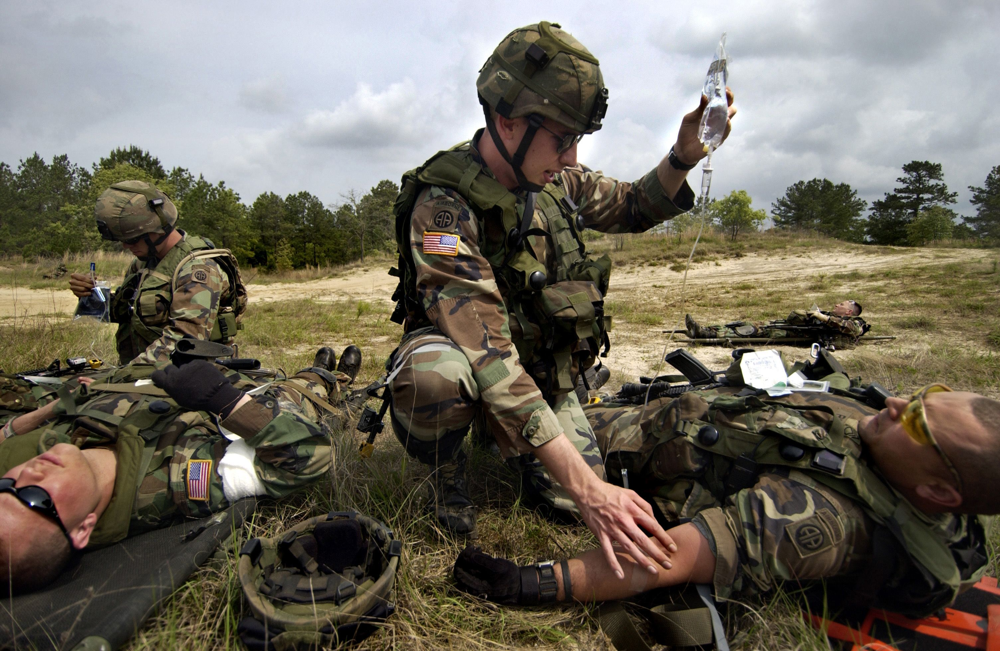
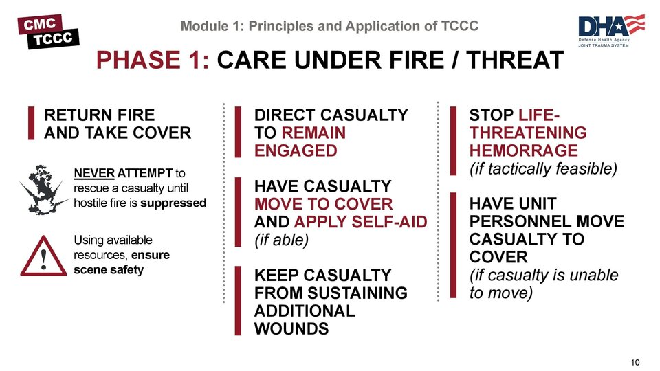
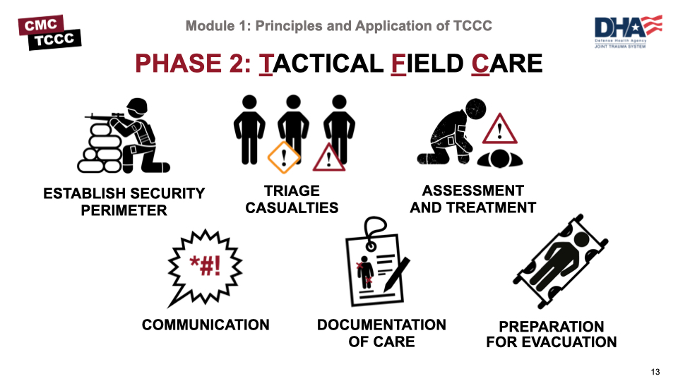
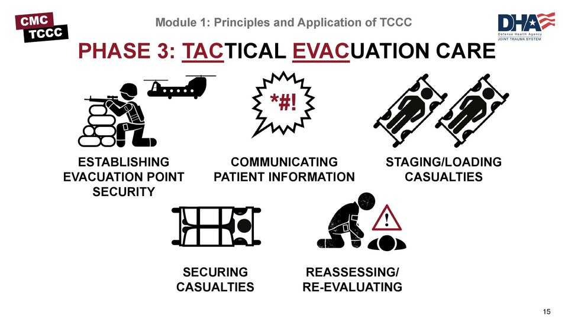

Antud leht annab ülevaate, kuidas meedik lahinguväljal kannatanut elus hoiab ning mis on peamised printsiibid, mille alusel töötada. Samuti on juttu väljaõppest ning kui suur roll on just ise õppimisel. Lisak mainin, mis on meediku väljaõppes peamised väljakutsed ning kuidas võtta sellest protsessit maksimum.
Järgneval netileheküljel saab ligipääsu erinevatele õppimismaterjalidele. Selleks tuleb teha endale konto, aga materjalide ligipääs on siiski tasuta siit.

Põhi printsiibid
Tactical Combat Casualty Care (TCCC) - algoritm, abil anname kannatule abi. Koosneb kolmest alaliigist:
Care Under Fire/Threat (CUF) - lühidalt öeldes, vastasele maha surumine ja esmaste massiivsete verejooksude peatamine
Tactical Field Care (TFC) - faas, mille jooksul meedik teostab cABCDE või MARCH algoritmi. Need algoritmid on kindel abiandmise järjekord.
Tactical Evacuation Care (TACEVAC) - faas, mille jooksul kannatanu transporditakse kõrgemasse meditisiinilisee punkti
MARCH algoritm
M - Massive bleeding, peatatakse kõik massivsed verejooksud
A - Airways, meedik tagab, et kannatanu hingamisteed oleksid avatud
R - Respiration, hingamine, meedik tagab, et inimene saaks hingata, ilma et tal oleks probleeme kopsudes
C - Circulation, vereringe, meedik kontrollib, et haavatul oleks poulss randmel olemas. Kui see puudub, siis see tähendab, et kannatanu vererõhk on eluohtlikult madal ning seda tuleb tõsta. Samuti kontrollib meedik, et kannatanul ei oleks sisemisi verejookse
H - Hypothermia/Head injuries, peakahjustused, meedik kontrollib, kas kannatanul esineb neuroogilisi kahjustusi.
Prioriteetide järgimine
Elupäästev tegevus enne mugavust - kõigepealt tuleb lahendada eluohtilkud vigastus ning alles siis liigutakse vigastuste juurde, mis ei pane kannatanu elu ohtu
Vigastused, mis tõenäoliselt tapavad esimesena(massiivsed verejooksud, hingamispuudulikkus, šokk)



Väljaõppe ja oma panus
Meediku väljaõpe on intensiivne ja nõudlik protsess, mis ühendab sõjalise ettevalmistuse ja meditsiinilised oskused. Combat-meedik peab suutma tegutseda lahinguväljal, kus olukorrad on ettearvamatud, ressursid piiratud ja iga sekund võib olla kriitiline. Meediku töö nõuab pidevat enesetäiendamist ja iseõppimine mängib selles tohutult suurt rolli. Mõned põhjused selleks:
Olukorrad on pidevas muutumises - Uued ravivõtted, varustus ja taktikad arenevad kiiresti. Parimad meedikud hoiavad end kursis uute protokollide, uuringute ja praktikatega.
Reaalsed olukorrad ei ole kunagi “õpiku järgi” - Lahinguväljal tuleb kohandada õpitud teadmised tegelikule olukorrale. Iseõppimine – refleksioon, juhtumianalüüs ja teiste kogemuste uurimine – aitab arendada paindlikku mõtlemist.
Vastutus oma valmisoleku eest - Meedik peab säilitama oma oskused, füüsilise vormi ja vaimse vastupidavuse ka väljaspool treeninguid. See tähendab pidevat harjutamist, näiteks:
Õppimine teiste kogemusest - Palju teadmisi tuleb teiste meedikute, veteranide ja instruktori tagasiside kaudu. Parimad meedikud on just need, kes on uudishimulikud ja võtavad initsiatiivi õppida ka väljaspool ametlikku programmi. Näiteks käivad väga paljud Ukraina meedikuid pidamas väga harivaid loenguid.